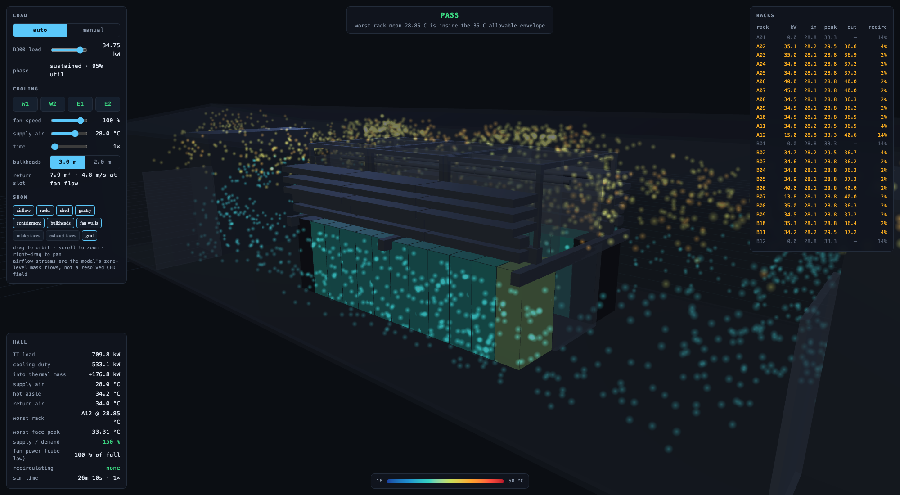
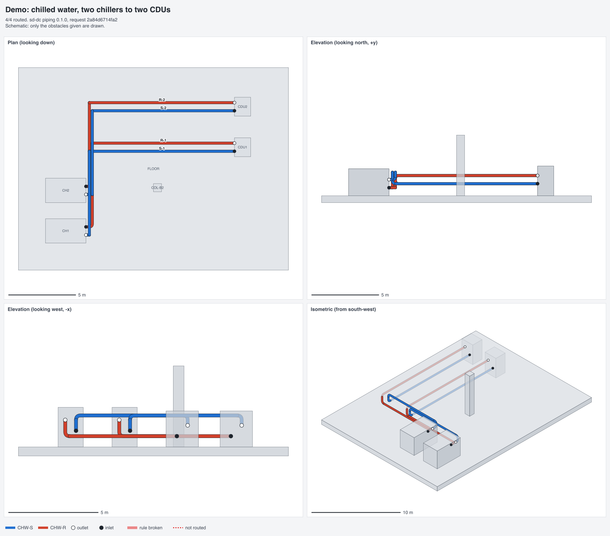
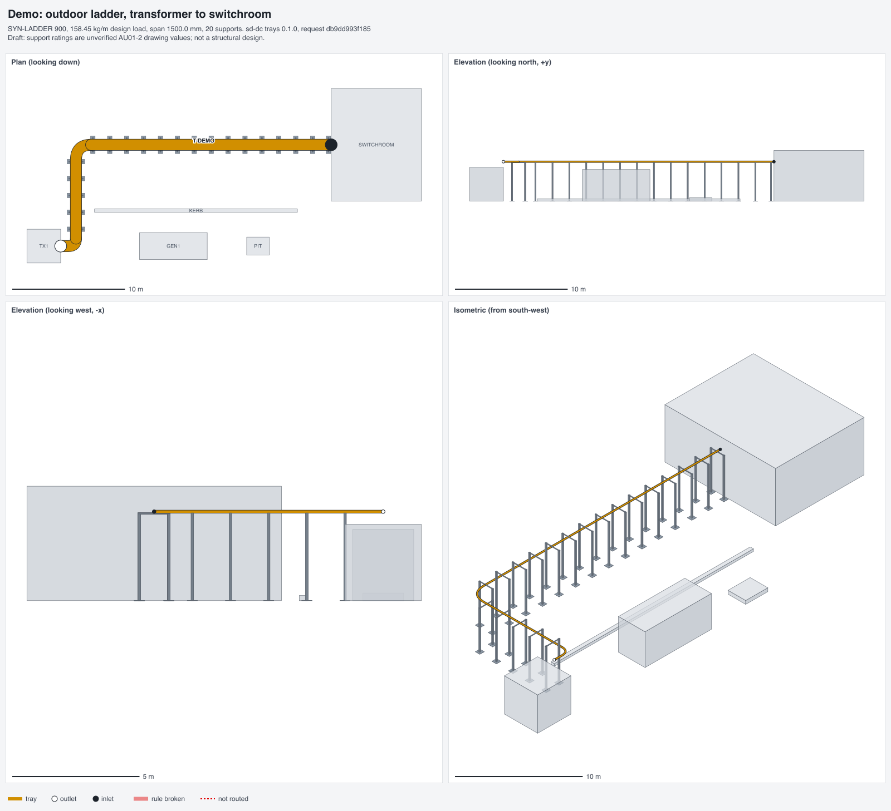
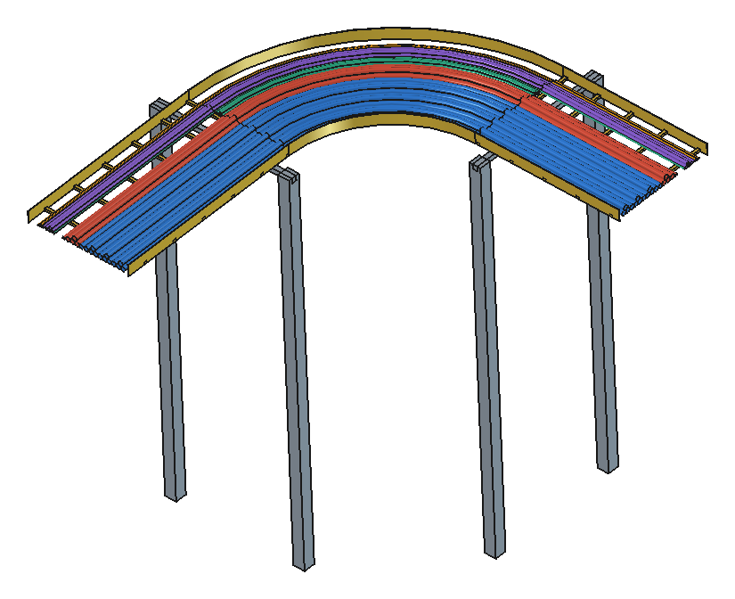
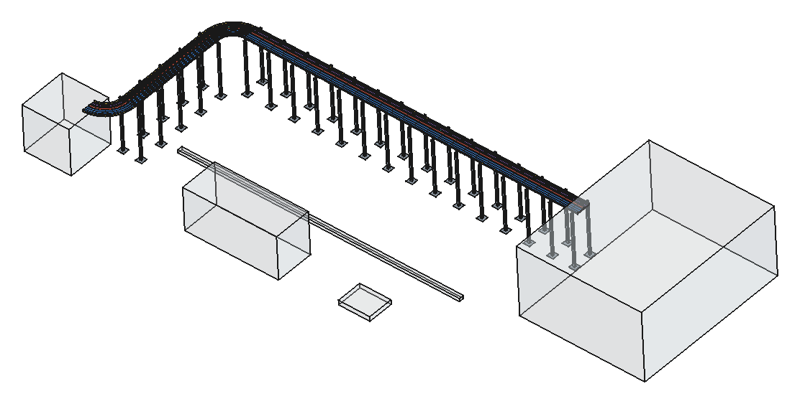
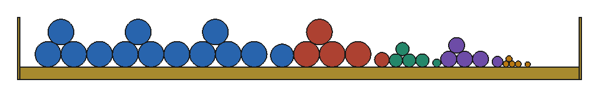
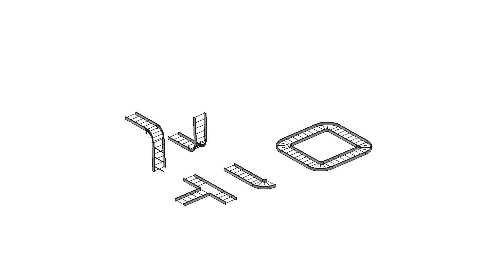
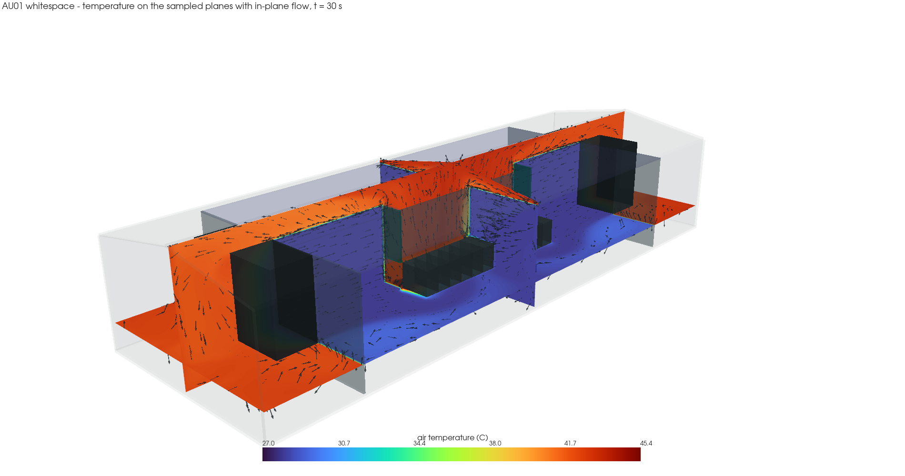

An agentic stack for data centre design
A data centre is sized, routed, costed and simulated by a dozen tools that don't talk to each other, and people carry the numbers between them. SD-DC bets that an agent can close that loop instead: sizing, routing, drawing and simulating become tool calls over one machine-readable model of the building, and every answer gets checked by running it.

The design loop
The unit of work isn't a drawing. It's a catalogue entry, a sizing calculation, a route or a simulation. Each is machine-readable, carries its own provenance, and can be checked by running it.
Every answer is checkable
A cable size is right or wrong against a standard. A pipe route closes or it doesn't. That makes the test suite a reward signal as well as a test.
The inputs are finite
Vendors publish datasheets and standards publish methods. A data hall contains a few hundred product families, not a long tail.
Nothing is real time
A design takes weeks. An agent that takes four minutes and a hundred tool calls to size a feeder run is still far faster than the meeting it replaces.
The tools share one model, IndustroML. It describes a site as containers, assets, interfaces and connections. A connection routed through named trays is an electrical fact, a geometric fact and a line on the bill of materials all at once.
Pipe routing as a service
An A* router over corners rather than grid cells, so the pipe rules are part of every move: leave along the outlet, arrive against the inlet, keep runs long enough for real elbows, keep clear of everything. It needs no FreeCAD, and other agents call it over MCP or REST.

piping_render_routes for an invented plant room: four DN150 pipes, two chillers to two CDUs. Supply is blue and return red. Elbows are drawn to scale, and anything that breaks a rule shows in red.What an agent gets back
- Corner points, straights and elbows, lengths and a bill of materials
- The validator's verdict, and a hash of the request
- An IndustroML connection, ready to write into the model
- A PNG review sheet with a JSON summary, for a person to look at
A refusal it can act on
A pipe that can't be built says why, in terms the agent can fix:
{"status": "failed", "reason": "blocked_nozzle",
"nozzle": "CH2.in", "obstacle": "R-1/run2",
"suggest": ["move R-1/run2 at least 218 mm
further from CH2.in",
"use DN40, which needs 147 mm"]}Tools
| MCP tool | REST | Does |
|---|---|---|
piping_route_pipe | POST /api/route | One pipe, outlet nozzle to inlet nozzle |
piping_route_network | POST /api/route/batch | Pipes in order; each routed pipe becomes an obstacle for the next |
piping_validate_route | POST /api/validate | Checks corner points someone drew by hand |
piping_render_routes | POST /api/render | Routes or checks, then draws plan, elevations and isometric |
tray_route_and_support | POST /api/tray | Routes a cable tray, supports it, sizes its cables and builds the 3D model |
On a real project benchmark of 34 chilled-water pipes, the router routed all 34 for a total of 194.2 m with 42 elbows. The engineer's hand-drawn routes were 196.4 m with 46 elbows.
Cable trays, supports and the cables in them
The same router lays out a ladder tray: it keeps the tray's real depth clear above and below and its full width clear beside it, and bends at the fitting radius. It then sizes every circuit on the tray to AS/NZS 3008, sets the support spacing from the actual cable weight, and builds the whole run as a FreeCAD and STEP model.




The cable schedule it produces
| Circuit | Load | Cable | Length | Design / capacity | Voltage drop |
|---|---|---|---|---|---|
| F-01 | 1200 kW | 3 × (3 × 1C 630 + 1C 630 N) + 1C 500 E | 41 m | 1757 / 1822 A | 0.66 % |
| F-02 | 400 kW | 3 × 1C 630 + 1C 630 N + 1C 185 E | 41 m | 586 / 625 A | 0.65 % |
| F-03 | 160 kW | 3 × 1C 150 + 1C 150 N + 1C 50 E | 43 m | 247 / 256 A | 0.80 % |
| F-04 | 250 kVA | 3 × 1C 240 + 1C 240 N + 1C 95 E | 41 m | 348 / 349 A | 0.74 % |
| F-05 | 63 A | 3 × 1C 16 + 1C 16 N + 1C 10 E | 45 m | 63 / 73 A | 1.69 % |
Copper XLPE single-core cables, sized at 40 °C ambient and a 25 kA fault level. All seven parallel runs on the tray count towards grouping derating. The full schedule also gives fault current, operating temperature, weight and tray width per circuit, and the metres of each size to order. It comes out as CSV and Markdown.
The loads are made up and the tray's load table is synthetic. Support ratings are unverified and every result is a draft for an engineer to check.
Images for review, then a live view
An agent's design is only useful once a person can check it, so every tool that makes geometry also makes something to look at.
Built Schematic sheets
Plan, elevations and isometric as SVG or PNG, straight from the router. No CAD needed, so an agent can attach one to every answer.
Next Shaded renders
A render job on the headless FreeCAD worker that images the real solids: the model's own views, close-ups and sections.
Planned Live view
The FreeCAD desktop streamed over WebRTC so an engineer can watch an agent work, or take the controls.
Containerised CAD
FreeCAD is heavy, stateful and slow to script, so it sits behind a job queue rather than inside a tool call. A CAD worker builds the solids, checks every joint, and either returns the STEP and glTF or says which clearance failed. A worker that refuses with a reason is a tool an agent can use. One that quietly produces geometry nobody can build just moves the error to the site.

What's built today
The loop above is where this is going. This is how far it has got.
| Component | What it does | State |
|---|---|---|
cable-sizing | AS/NZS 3008 cable sizing with a full audit trail. REST, MCP over stdio and HTTP, browser UI | Mature |
digital-twin | Real-time hall thermals, calibrated against CFD, streamed to a browser | Deployed |
piping | Pipe router, validator and review sheets as an MCP and REST service | Service |
trays | Tray routing, supports off the ground, cable sizing on the tray, FreeCAD and STEP model | Draft |
cfd-cabinet-cooling | OpenFOAM: does a fan wall keep a 30 kW cabinet inside ASHRAE limits? | Working |
liquid-twin | Direct liquid cooling, CDU to chillers, as a hydraulic network | Phase 1 of 6 |
cables, cable-tray-ezystrut | Catalogues: cable OD, weight, bend radius and impedance; tray families and joining rules | Working |
vm-setup | Headless FreeCAD, XML-RPC server and MCP bridge | Working |
| Design agent | An agent that takes a design task and calls all of the above | Designed |
layout, costing | Composing a hall from a brief; BOM to rates to a number | Not built |

Try it
git clone https://github.com/sinkers/sd-dc
cd sd-dc
./run-tests.sh
# pipe routing over MCP
claude mcp add piping -- \
python3 piping/mcp_server.py
# the tray demo on this page
python3 trays/tools/demo.pyThe value suites skip without the licensed data, which isn't in the repo. A synthetic suite still checks that it all fits together.
Code open, data private
Engines, schemas, tests and docs are public. Vendor documents, standards tables and project data are not.
Public
The engines, the IndustroML schema, tests and documentation, in sd-dc and industroml. Every demo on this page uses invented scenes.
Private
Vendor datasheets, standards tables, the training corpus, project models and installed rates. A calculator holds the data and the user gets an answer, the same way the established AS/NZS 3008 calculators work.
This is a private study and research project, not for commercial use. A statement of purpose isn't a licence: the vendor data it reads isn't licensed to you, so check each source's terms before using it.